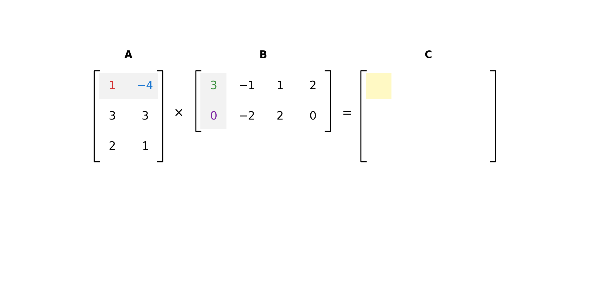

Az összes m×n-es valós mátrix halmazát Rm×n-nel jelöljük, az összes m×n-es komplex mátrix halmazát pedig Cm×n-nel.
Ha n=m, akkor a mátrix négyzetes vagy kvadratikus.
Egy mátrix főátlója alatt az (a11,a22,a33,…,akk) szám k-ast értjük (k=min{m,n})
Két mátrix egyenlő, ha azonos típusúak (ugyanannyi soruk és oszlopuk van), és megfelelő elemeik megegyeznek.
Azon n×n-es mátrixot, melynek főátlójában csupa 1-es áll, minden más eleme 0, n-edrendű vagy n-dimenziós egységmátrixnak nevezzük.
Jele: En vagy In.
E2=[1001]E3=100010001
Műveletek
Összeadás
Csak azonos típusú mátrixokat tudunk összeadni. Legyenek A=(aij),B=(bij),C=(cij)m×n mátrixok. Ekkor C=A+B, ha cij=aij+bij. Azaz megfelelő indexen lévő elemeket összeadjuk.
Például:
[1223]+[2648]=[1+22+62+43+8]=[38611]
Skalárral való szorzás:
Elemenként végezzük, azaz, ha λ skalár, A=(aij) egy m×n mátrix, akkor λA=(λaij). Azaz minden elemet megszorzunk az adott skalárral.
Például:
2×[1223]=[2×12×22×22×3]=[2446]
Mátrixszorzás:
Legyen A=(aij) egy m×k,B=(bij) egy k×n típusú mátrix. Ekkor A és B szorzata az a C=(cij)m×n típusú mátrix, amelyre
cij=r=1∑kairbrj
Elvégezhető mátrixszorzások:
A=132−431B=[30−1−21220]
A→3×2B→2×4
AB elvégezhető, ez egy 3×4 mátrixot eredményez. BA viszont nem végezhető el.

Tulajdonságai:
Ha Am×n típusú, akkor Em⋅A=A és A⋅En=A.
Legyenek A,B mátrixok és tegyük fel, hogy létezik AB. Ha λ tetszőleges skalár, akkor λ(AB)=(λA)B=A(λB)
Ha A,B,C olyan mátrixok, hogy AB és BC létezik, akkor (AB)C=A(BC). (asszociatívitás)
Ha A és B azonos típusú mátrixok és létezik AC, akkor BC is létezik és (A+B)C=AC+BC. (disztributivitás)
A mátrixszorzás nem kommutatív, azaz általában AB=BA.
Speciális mátrixok
Transzponált mátrix
Legyen A egy m×n-es mátrix. Azt az AT-vel jelölt n×m mátrixot, amelynek sorai A oszlopai, Atranszponáltjának nevezzük. Ha AT=A akkor A-t szimmetrikus mátrixnak nevezzük.
Tulajdonságok:
(AT)T=A
(AB)T=BT⋅AT
Diagonális mátrix
Egy olyan n-ed rendű mátrix, melynek főátlóján kívűl az összes eleme 0.
Nullmátrix / Egymátrix
Egy mátrix, melynek minden eleme 0/1.
Mátrixok inverze
Az A n-edrendű mátrix invertálható, vagy létezik inverze, ha létezik olyan B n-edrendű mátrix, hogy AB=BA=En
Ha A invertálható, akkor inverze egyértelmű (nincs több inverze).
Például: A=[4735]A−1=[−573−4]
Tulajdonságai:
(A−1)−1=A
AB ha létezik, (AB)−1=B−1⋅A−1
AT ha invertálható, (A−1)T=(AT)−1
Determináns (Leibinz-formula, glhf)
Legyen n∈N és jelölje σ az {1,2,…,n} halmaz egy permutációját, azaz legyen
σ:{1,2,…,n}→{1,2,…,n},i↦σ(i)
bijektív függvény. (σ(i) jelüli a permutációban az i. helyen álló elemet).
Például vegyük az {1,2,3} halmazt, ennek egy lehetséges permutációja: 3,1,2. Ilyenkor: σ(1)=3 σ(2)=1 σ(3)=2
Azt mondjuk, hogy a σ permutációnál az i és j elem inverzióban áll, ha i<j és σ(i)>σ(j). Egy σ permutáció páros, ha benne az inverzióban álló párok száma páros, és páratlan, ha ez a szám páratlan.
Például a 3,1,2 permutációban összehasonlítjuk az összes számpárt balról jobbra:
3 és 1: az első hely megelőzi a másodikat, de az első helyen lévő szám, nagyobb mint a második helyen lévő szám. Azaz 1<2, de σ(1)>σ(2) vagyis 3>1, ami egy inverziót eredményez.
3 és 2: 1<3, de σ(1)>σ(3) vagyis 3>2, ami még egy inverzió.
1 és 2: 2<3 és σ(2)<σ(3), itt nincs inverzió.
Összesen 2 darab inverzió van a permutációban, így a permutáció páros.
Legyen A=(aij) egy n×n-es kvadratikus mátrix. az An2 eleméből válasszunk ki úgy n elemet, hogy minden sorból és oszlopból pontosan egyet választunk. A kiválasztott elemek alakja:
a1σ(1),a2σ(2),…,anσ(n)
Az A mátrix determinánsa: det(A)=∣A∣=σ∑ϵ(σ)a1σ(1)a2σ(2)…anσ(n)
Ez az összeg n! tagú. Itt: ϵ(σ)={1,−1,ha σ paˊros,ha σ paˊratlan.
Legyen: A=[4273]
Ebben az esetben n=2, tehát 2!=2⋅1=2 darab szorzatot fogunk összeadni/kivonni. Az oszlopindexek lehetséges permutációi: (1,2) és (2,1).
1. Tag: Az alapállapot (σ1=1,2)
Ebben az esetben a sorrend a természetes növekvő sorrend.
Kiválasztott elemek:a1,1=4 és a2,2=3.
Permutáció:σ(1)=1,σ(2)=2.
Inverziók: Nincs inverzió (0 darab), mert a kisebb szám megelőzi a nagyobbat.
Előjel (ϵ): Mivel a 0 páros, az előjel: +1.
Érték:+1⋅(4⋅3)=12.
2. Tag: A felcserélt állapot (σ2=2,1)
Itt az oszlopindexeket megcseréltük.
Kiválasztott elemek:a1,2=7 és a2,1=2.
Permutáció:σ(1)=2,σ(2)=1.
Inverziók: Egy inverzió van (1 darab), mert a 2 megelőzi az 1-et (2>1).
Előjel (ϵ): Mivel az 1 páratlan, az előjel: −1.
Érték:−1⋅(7⋅2)=−14.
A determináns kiszámítása
A definíció szerint összeadjuk a kapott tagokat:
det(A)=σ∑ϵ(σ)a1σ(1)a2σ(2)=12+(−14)=−2
Determináns kiszámítása
Sarrus szabály
n=2:det(A)=∣A∣=a11a22−a12a21, vagyis főátló elemeinek szorzatából kivonjuk a mellékátló elemeinek szorzatát. [a11a21a12a22]
Kifejtési tétel:
Legyen A egy n-edrendű mátrix. Kiválasztjuk A egy tetszőleges sorát (vagy oszlopát), ennek minden elemét megszorozzuk az elemhez tartozó algebrai aldeterminánsal, majd a kapott szorzatokat összeadjuk.
Az aij elemhez tartozó algebrai aldetermináns (−1)i+jAij, ahol Aij annak az (n−1)-edrendű determinánsának az értéke, amelyet A-ból az i. sor és j. oszlop kihúzásával kapunk.
Diagonális mátrix determinánsa a főátló elemeinek szorzata.
Háromszögmátrix determinánsa a főátlóban lévő elemek szorzata (Gauss-elimináció)
det(A)=det(AT)
Ha A valamely sora csupa 0 elemből áll, akkor det(A)=0
Ha A két sorát felcseréljük, a determináns −1-szeresére változik.
Ha A két sora egyenlő, akkor det(A)=0
Ha A valamely sorát megszorozzuk egy λ skalárral, akkor az így kapott mátrix determinánsa λ⋅det(A)
Ha A minden sorát megszorozzuk egy λ skalárral és A n-edrendű, akkor a kapott mátrix determinánsa λn⋅det(A)
Ha A két sora egymás skalárszorosa, akkor det(A)=0
Egy mátrix determinánsa nem változik, ha valamely sorához hozzáadjuk egy másik sor λ-szorosát.
Ha A valamely sora előállítható a többi sor lineáris kombinációjaként, akkor det(A)=0
A fentiek igazak sorok helyett oszlopokra is.
Determináns szorzástétele: Ha A és B azonos rendű négyzetes mátrixok, akkor det(AB)=det(A)⋅det(B)
Tulajdonságok következményei: Ha egy mátrix determinánsa nem 0, akkor a mátrix sorai és oszlopai lineárisan független vektorok. Ha An×n-es, sorai Rn egy bázisát alkotják.
Determináns és invertálás kapcsolata
A négyzetes mátrix szinguláris, ha det(A)=0, ellenkező esetben Areguláris.
Tétel: egy négyzetes mátrix pontosan akkor invertálható, ha reguláris.
det(A)⋅det(A−1)=det(E)=1
det(A)−1=det(A−1)
Mátrix rangja
Egy mátrix rangja alatt a mátrix sorai/oszlopai mint vektorok által alkotott vektorrendszer rangját értjük. A mátrix rangja megegyezik a lineárisan független oszlopok számával. A rangot is Gauss-elimináció segítségével tudjuk kiszámolni.
Az alábbi átalakítások nem változtatják meg a mátrix rangját:
Egy sor szorzása λ=0-val.
Egy sorhoz hozzáadni egy másik sor λ-szorosát.
Sorok sorrendjének megváltoztatása.
Mátrix, mint lineáris transzformáció
Ha A∈Rm×n, akkor A minden n elemű oszlopvektorhoz hozzárendelt egy m elemű oszlopvektort.
Magyarul, ha veszünk egy m×n-es mátrixot, akkor ha ezt megszorozzuk egy n elemű oszlopvektorral, akkor kapunk egy m elemű oszlopvektort.
A=123456u=[1020]
A⋅u=1⋅10+4⋅202⋅10+5⋅203⋅10+6⋅20=90120150
Legyenek V és W vektorterek R felett. φ:V→Wlineáris leképezés, ha:
additív, azaz ∀u,v∈V:φ(u+v)=φ(u)+φ(v)
homogén, azaz ∀v∈V,λ∈R:φ(λv)=λφ(v)
Ha V=W, akkor a lineáris leképezést lineáris transzformációnak hívjuk.
Így A∈Rm×n, esetén φ(u)=Au lineáris leképzés Rn-ből Rm-be.
Ez a mátrix megváltoztatja a vektor dimenzióját. Például a legelső példában szereplő 3×2-es A mátrix pontosan egy ilyen lineáris leképezés, mert a 2 dimenziós bemenetből (R2) egy 3 dimenziós kimenetet (R3) csinált.
Ha A∈Rn×n, akkor φ(u)=Au lineáris transzformáció.
Magyarul, mivel a bemenet és a kimenet dimenziója megegyezik (V=W, azaz négyzetes a mátrix), a transzformáció csak "mozgatja" a teret (pl. forgat, nyújt, tükröz), de nem lép ki belőle.
Például egy 90 fokos forgatás a 2D-s síkon (R2→R2):
A=[01−10]u=[20]
φ(u)=A⋅u=[0⋅2+(−1)⋅01⋅2+0⋅0]=[02]
Itt a mátrix az X-tengelyen fekvő (2,0) vektort sikeresen elforgatta az Y-tengelyre a (0,2) pontba. A dimenzió nem változott, csak a vektor pozíciója transzformálódott.
Sajátérték, sajátvektor
Legyen A egy n×n-es mátrix. Egy nemnulla x vektor az Asajátvektora, ha létezik olyan λ skalár, hogy
Ax=λx
Ekkor λ az A mátrix x sajátvektorához tartozó sajátértéke.
A karakterisztikus egyenlet levezetése
Induljunk ki a sajátérték-probléma definíciójából: Ax=λx
Rendezés: Hozzuk az egyenletet egy oldalra! Ax−λx=0
Az egységmátrix (E) bevezetése: Ahhoz, hogy ki tudjuk emelni az x vektort, a λ számot "mátrixosítanunk" kell az egységmátrixszal (x=Ex). Ax−λEx=0
Kiemelés: Emeljük ki az x oszlopvektort (szigorúan jobbra)! (A−λE)x=0
Magyarul a levezetésről: Kaptunk egy (A−λE)x=0 alakú homogén lineáris egyenletrendszert. Ennek mindig van egy "triviális" (unalmas) megoldása, az x=0 (nullvektor). Mivel a sajátvektor definíció szerint nem lehet a nullvektor, nekünk a nemtriviális megoldásokat kell megtalálnunk.
A karakterisztikus egyenlet
Egy homogén lineáris egyenletrendszernek pontosan akkor létezik nemtriviális (nullvektortól eltérő) megoldása, ha az egyenletrendszer együtthatómátrixa "kilapítja a teret", azaz a determinánsa nulla.
Tehát az x=0 megoldás létezésének feltétele: det(A−λE)=0
Ezt az egyenletet nevezzük a mátrix karakterisztikus egyenletének. Ennek a megoldásai (a gyökei) adják meg a mátrix sajátértékeit (λ).
Ha a λ értéke megvan, azt visszahelyettesítve az (A−λE)x=0 egyenletbe megkapjuk a hozzá tartozó x sajátvektort.
Adott az alábbi mátrix: A=[12−4−5]
Írjuk fel a karakterisztikus egyenletet: det(A−λE)=0
Oldjuk meg a másodfokú egyenletet: λ1,2=2−4±16−12=2−4±2
A két sajátérték tehát: λ1=−1 és λ2=−3.
Ha λ1=−1:
Megoldjuk az (A−(−1)E)x=0, azaz az (A+E)x=0 egyenletet: [22−4−4][x1x2]=[00]
A mátrixszorzásból kapott egyenlet: 2x1−4x2=0⟹2x1=4x2⟹x1=2x2
Ha x2-t egy szabad t paraméternek választjuk (t=0), akkor x1=2t. A sajátvektor: x(1)=[2tt]=t⋅[21]
Ha λ2=−3:
Megoldjuk az (A−(−3)E)x=0, azaz az (A+3E)x=0 egyenletet: [42−4−2][x1x2]=[00]
Mindkét sor ugyanazt az egyenletet adja (a második sor fele az elsőnek): 2x1−2x2=0⟹2x1=2x2⟹x1=x2
Ha x2-t egy szabad t paraméternek választjuk (t=0), akkor x1=t. A sajátvektor: x(2)=[tt]=t⋅[11]
Megjegyzés
Egy n×n-es mátrix sajátértékeinek meghatározásához egy n-edfokú polinom gyökeit kell megkeresnünk.
Egy A∈Rn×n mátrix karakterisztikus polinomja egy valós együtthatós n-edofkú polinom ⟹ egy A∈Rn×n mátrixnak a komplex számos körében multiplicitással számolva n darab sajátértéke van.
Ha egy komplex szám sajátértéke az A∈Rn×n mátrixnak, akkor a konjugáltja is sajátérték lesz.
Ha x az A mátrix λ sajátértékéhez tartozó sajátvektora, akkor cx˙ is a λ sajátértékéhez tartozó sajátvektor.
Diagonális- és háromszögmátrix sajátértékei a főátlóban álló számok.
Egy mátrix pontosan akkor invertálható, ha a 0 nem szerepel a sajátértékei között.
Ha A∈Rn×n egy szimmetrikus mátrix, akkor minden sajátértéke valós.
Miért kell ez?
Segítségükkel bonyolult mátrixszorzások egyszerű hatványozásra egyszerűsödnek, Google PageRank algoritmusa (weblapok fontossági sorrendje erre épül).
5.2. Intelligens ágensek, ágensek típusai, ágensek környezetét leíró tulajdonságok. Markov döntési folyamatok és adaptív dinamikus programozás alapú ágens, Időbeli különbség (TD-temporal difference) alapon hasznosságot tanuló ágens. Aktív megerősítéses tanuló ágens, felfedezés és kihasználás (exploration és exploitation) módszere. Q-tanuló ágens.